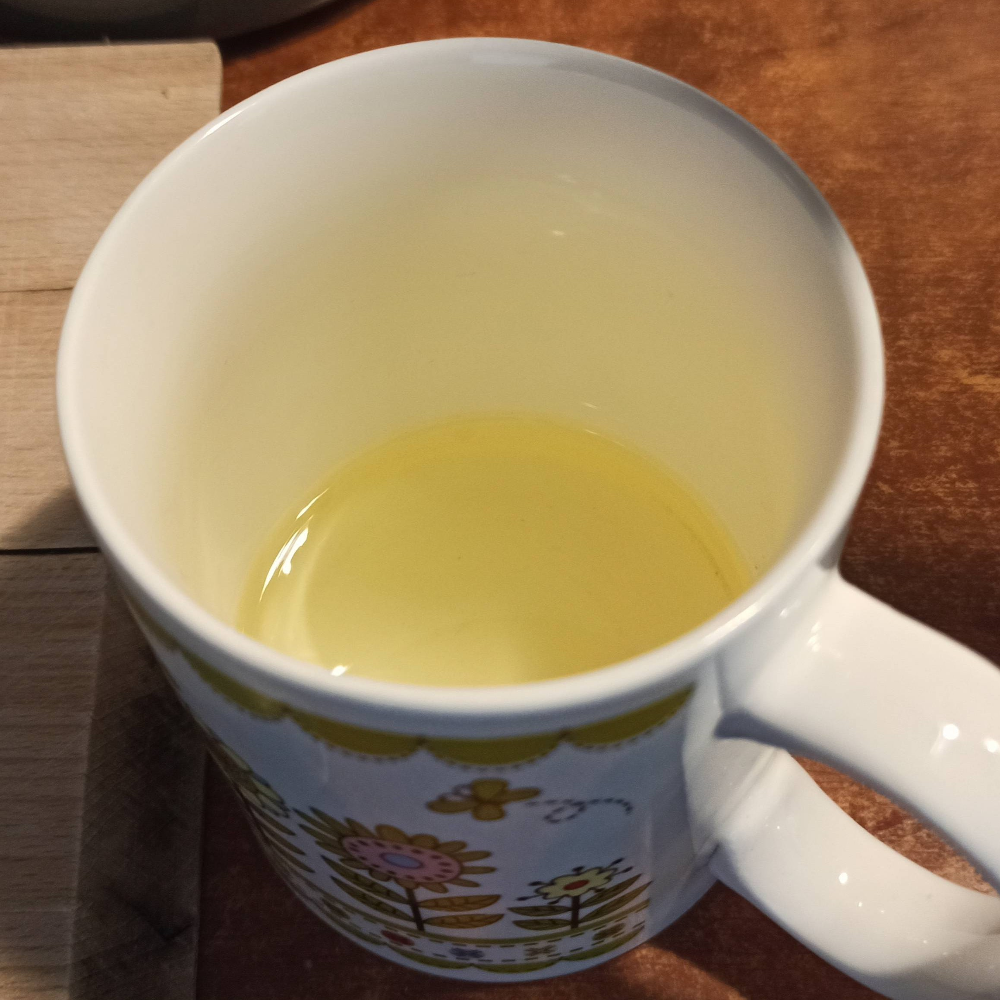
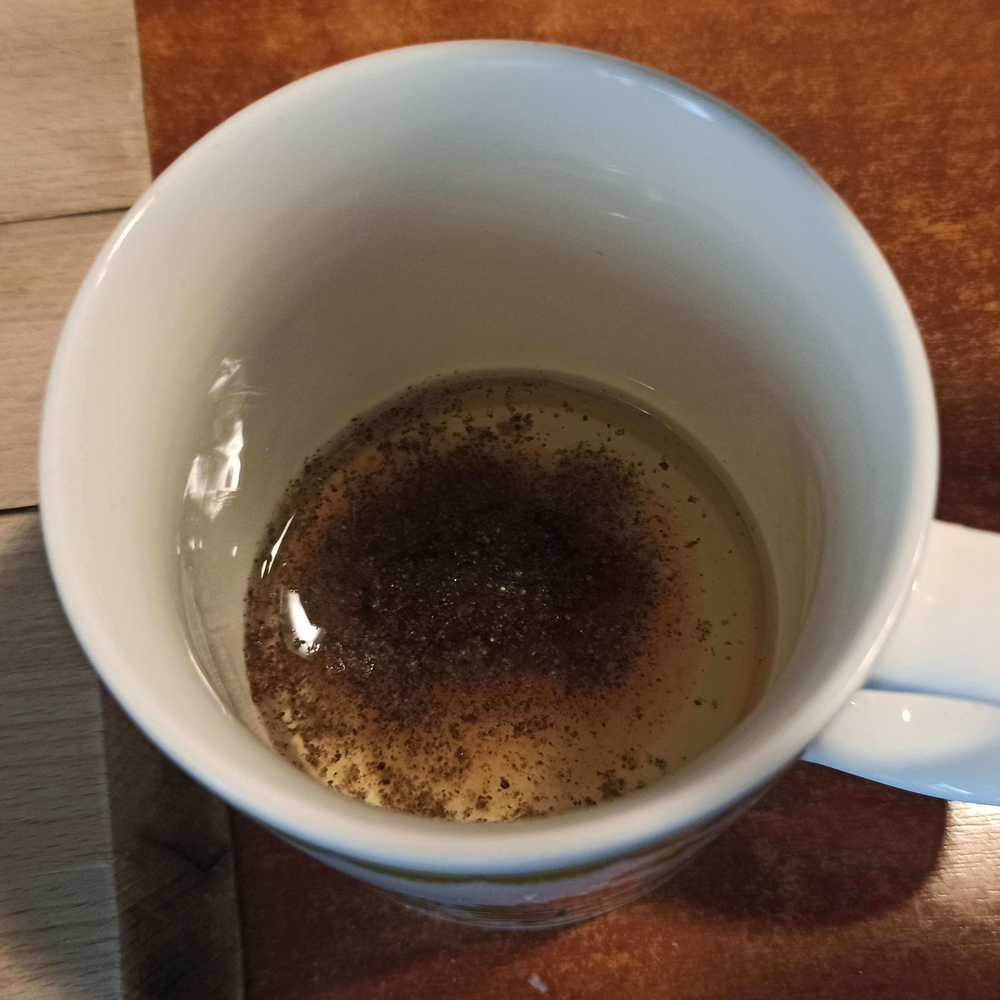
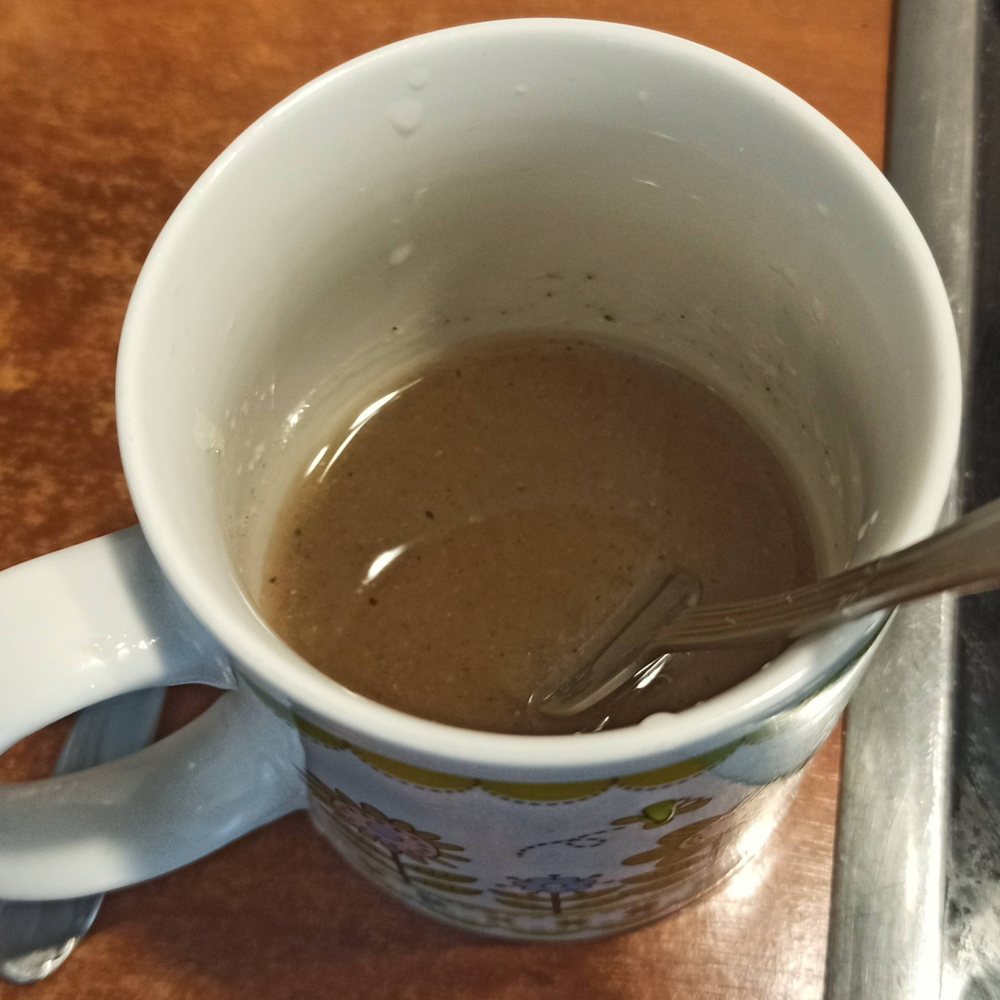

Składniki:
- połowa białej kapusty
- puszka kukurydzy (duża 340g)
- czerwona cebula
- papryka
- ogórek
- 1 pęczek rzodkiewek (z 10)
- zielona cebulka (takie trzy cebulki)
Składniki na sos:
- olej
- 2(?) łyżeczki soli
- pieprz
- półtorej łyżeczki cukru
- łyżka octu jabłkowego
- 3 łyżki soku z cytryny
Kapustę posiekać na małe kawałki/paski, a resztę składników pokroić na małe kawałki.
Do kubka wlać trochę olej (może z 1/4), dodać resztę składników i wymieszać do rozpusczenia, zostawić też żeby się rozpuściło i potem dodać do surówki, żeby trochę nasiąkła


